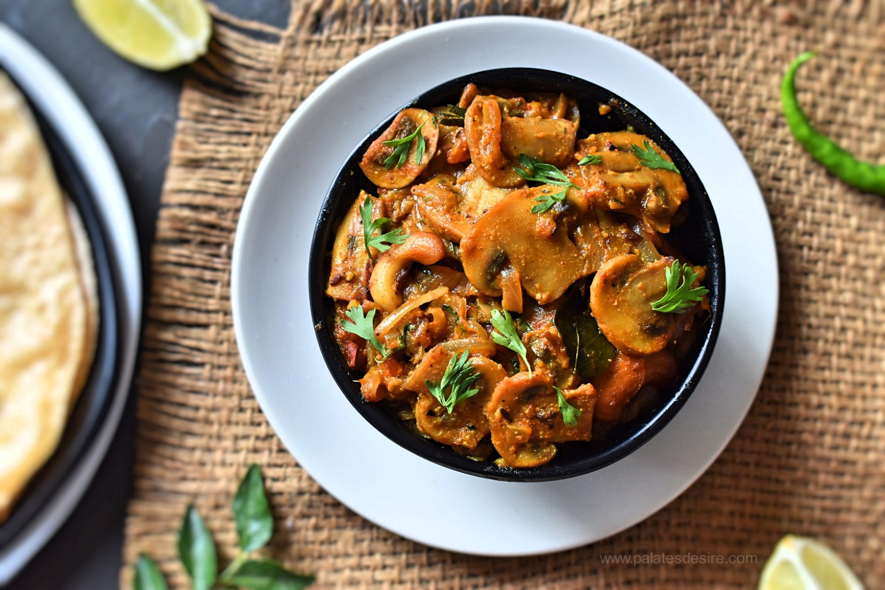

Mushroom Masala

Ingredients:
- 500g mushrooms, sliced
- 1 onion, finely chopped
- 2 tomatoes, pureed
- 1 teaspoon ginger-garlic paste
- 1 teaspoon cumin seeds
- 1 teaspoon coriander powder
- 1/2 teaspoon turmeric powder
- 1/2 teaspoon garam masala
- 1/2 teaspoon red chili powder
- 1/4 cup heavy cream
- 2 tablespoons oil
- Fresh cilantro for garnish
- Salt to taste
Directions:
- Heat oil in a pan. Add cumin seeds and let them splutter.
- Sauté chopped onion until golden brown.
- Add ginger-garlic paste and cook for a minute.
- Stir in tomato puree, coriander powder, turmeric powder, garam masala, red chili powder, and salt. Cook until the oil separates.
- Add sliced mushrooms and cook until they release their moisture and become tender.
- Pour in heavy cream and simmer for a few minutes.
- Garnish with fresh cilantro.
- Serve hot with naan or rice.